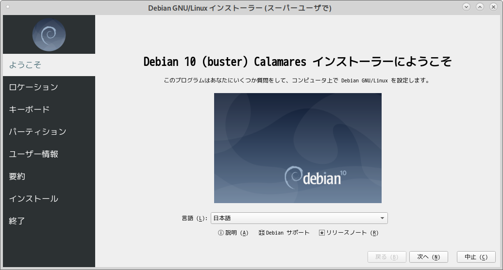
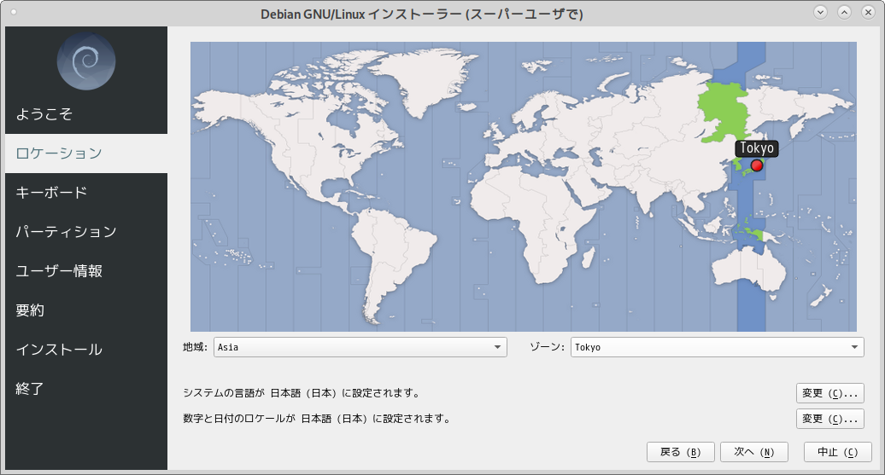
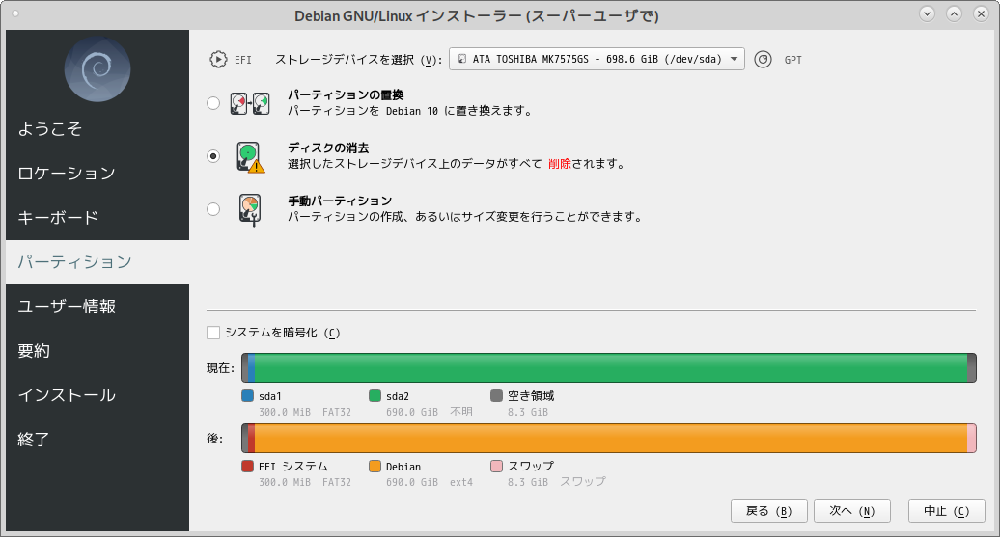
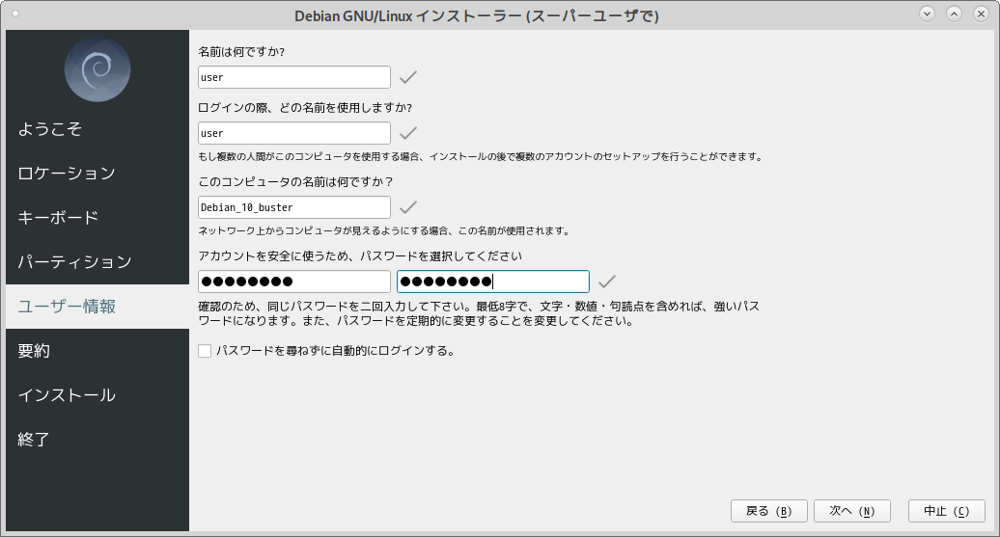
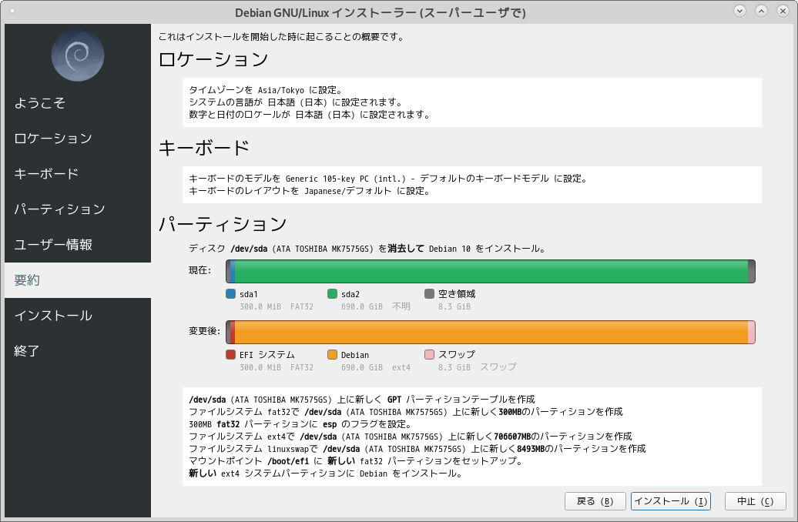
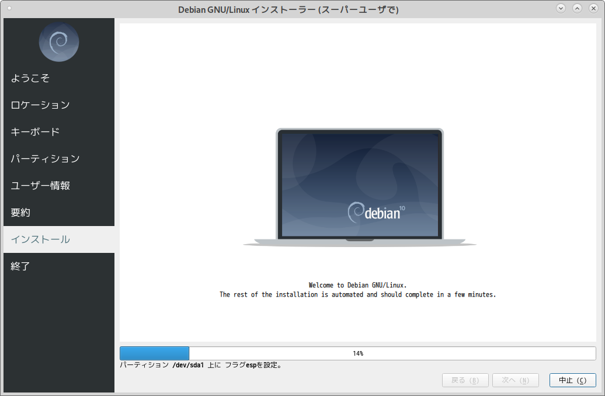
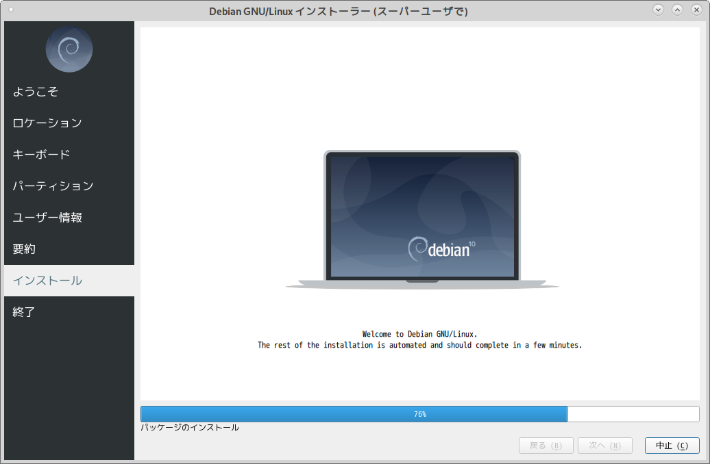
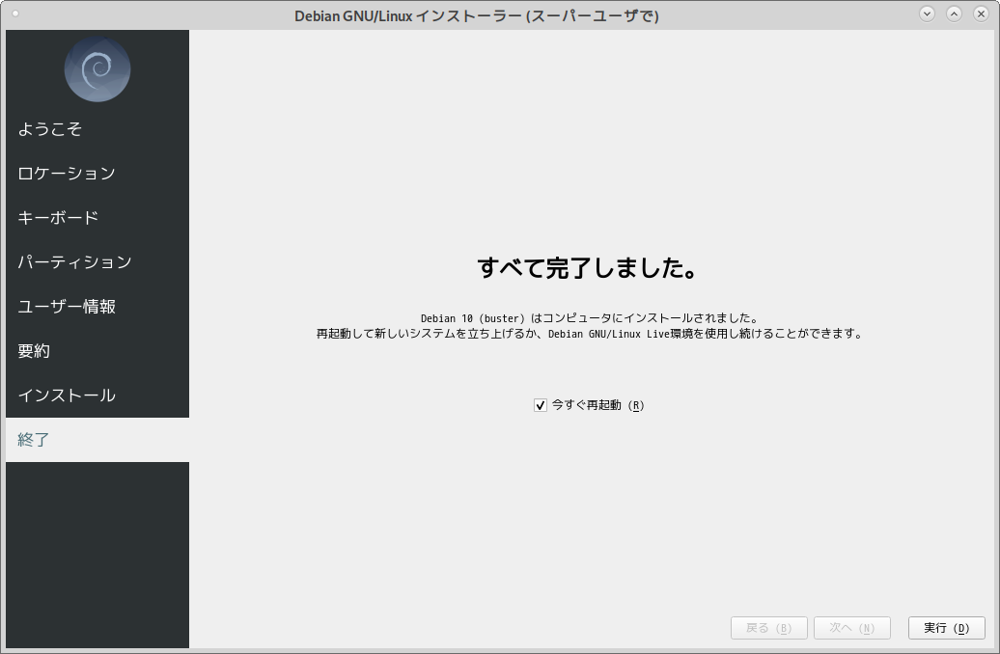

HOME
/
Distributions
/
Debian
/
Live
/
buster
Last updated: 2020/12/27 19:51 JST
Debian Live 10 (buster) のインストール
目 次
インストールの手順について
インストール後の設定
日本語入力出来るようにする
デスクトップのカスタマイズ - ごみ箱を作る
インストールの手順について
以下、実際のインストールの流れを紹介します。スクリーンショットを追って作業を進めてください。Debian 10 は以前のリリースと比較してよりグラフィカルで対話的に行えるように改善されました。
インストールはデスクトップにある「インストール」アイコンをダブルクリックします。すぐインストーラが起動します。

任意の地域と標準時刻を設定します。

日本語キーボードを選びます。
ディスクをすべて消して新規インストールする場合。インストールのオプションが選べます。

スーパーユーザを作成します（root ユーザは作成しません）。

インストール直前の最終的な確認画面です。「インストール」を押すと開始します。

インストールを開始します。

インストールの進行状況が表示されます。

インストール完了です。ここでメディアを取り外し再起動します。

インストール後の設定
日本語入力出来るようにする
パネルの [システム] > [設定] > [その他] > [入力メソッド] を起動するか、あるいは次のコマンドを実行します。
$ im-config
日本語入力の設定画面が立ち上がるので、ここで uim を選択します。これで設定完了です。
デスクトップのカスタマイズ - ごみ箱を作る
MATE Live CD では「ごみ箱」がデスクトップに表示されません。表示されないだけで、ごみ箱は実際に存在します。ごみ箱のアイコンを表示させるには、mate- tweak パッケージをインストールする必要があります。インストールするには次のコマンドが使えます。
$ sudo apt install mate-tweak
HOME
/
Distributions
/
Debian
/
Live
/
buster